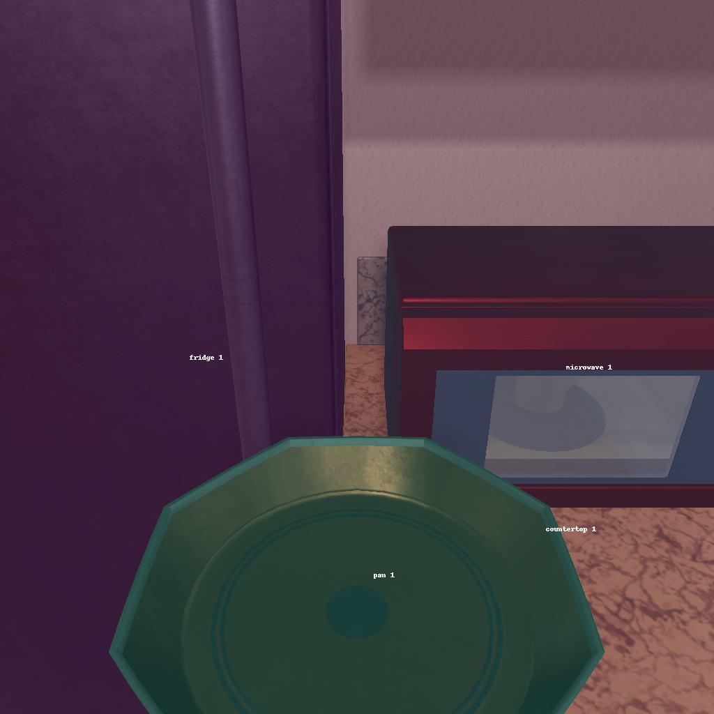

---------------------------------------------------------task: 18---------------------------------------------------------
--------------------------------------------------------------------------------------------------------------------------------------------------------------------
--------------------------------------------------------------------------------------------------------------------------------------------------------------------
Step:--------------------------------------------------------------------------18-------------------------------------------------------------------------------
----------------------------------------
VLM Prompt:
Image1:
**Instruction**
1. Analyze the provided image to identify all visible household objects, focusing on those relevant to the task description "cool some pot and put it in cabinet."
2. Use the analysis of the image and the task hint "The agent must find an object of the desired type, pick it up, go to a fridge, cool the object with the fridge, then find the correct location to place it, and put it down there. The agent does not need to use the fridge button or open the fridge to cool the object, and the agent just needs to do action that is "cool the object with the fridge"." to answer the question: what is the most reasonable action in the choices for the task description "cool some pot and put it in cabinet"?
4. Decide and write the answer using the template: The answer is: (i): , where i is the real number. If there is no desired object in the image, search every place based on **Initial Observation** to find the object. And if no one is exactly correct, choose a similar answer.
**Initial Observation**
You are in the middle of a room. Looking quickly around you, you can see cabinet (1-20), countertop (1-3), coffeemachine (1), toaster (1), sink (1), fridge (1), microwave (1), garbagecan (1), drawer (1-3), sinkbasin (1), stoveburner (1-4), shelf (1-3)
**Answer Choices**
(1): go to cabinet 1
(2): go to cabinet 2
(3): go to cabinet 3
(4): go to cabinet 4
(5): go to cabinet 5
(6): go to cabinet 6
(7): go to countertop 1
(8): go to coffeemachine 1
(9): go to cabinet 7
(10): go to toaster 1
(11): go to cabinet 8
(12): go to sink 1
(13): go to microwave 1
(14): go to garbagecan 1
(15): go to cabinet 9
(16): go to cabinet 10
(17): go to countertop 2
(18): go to cabinet 11
(19): go to cabinet 12
(20): go to drawer 1
(21): go to countertop 3
(22): go to drawer 2
(23): go to cabinet 13
(24): go to sinkbasin 1
(25): go to cabinet 14
(26): go to drawer 3
(27): go to stoveburner 1
(28): go to stoveburner 2
(29): go to stoveburner 3
(30): go to cabinet 15
(31): go to stoveburner 4
(32): go to cabinet 16
(33): go to cabinet 17
(34): go to cabinet 18
(35): go to cabinet 19
(36): go to cabinet 20
(37): go to shelf 1
(38): go to shelf 2
(39): go to shelf 3
(40): open fridge 1
(41): close fridge 1
(42): put pan 1 in/on fridge 1
(43): examine pan 1
(44): examine fridge 1
**Answer**
Let's think step by step by following the instructions.
----------------------------------------
----------------------------------------
Original Response:
The task is to cool some pot and put it in a cabinet. First, we need to identify a pot which, in this case, is labeled as "pan 1" in the image. Since the task hint specifies that the agent does not need to use the fridge button or open the fridge to cool the object, the action of putting the pan in/on the fridge to cool it would be the next logical step. After cooling the pan, the agent would then need to find a cabinet to place it in. However, the image does not show any cabinets, and the task does not specify which cabinet to use.
Given the available choices and the task hint, the most reasonable action would be to first cool the pan with the fridge and then decide on which cabinet to place it in, which is not specified in the choices. The closest action related to the task would be to put the pan in/on the fridge.
The answer is: (42): put pan 1 in/on fridge 1
----------------------------------------
----------------------------------------
>>> Refine Original VLM Response and Get Pure Action: put pan 1 in/on fridge 1
----------------------------------------
-----------------------------------------------------------------
Running time: 7.306336879730225 seconds
Total Money: 6.508420000000004
-----------------------------------------------------------------
-----------------------------------------------------------------
Text Observation:Nothing happens.
-----------------------------------------------------------------
UNSUCCEED